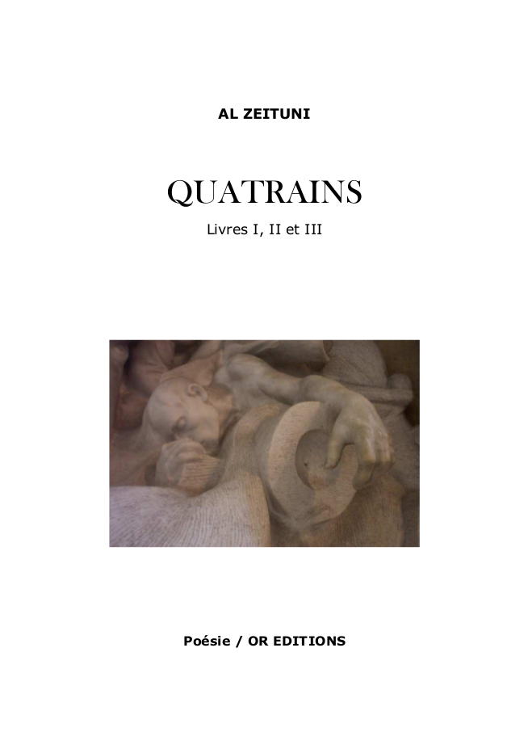

OR Editions
Home
Publications
Anatole Swadock, Trucs de bouse
Anatole Swadock, Petits poèmes géologiques
Emile Lyre, Le voyage philosophique
Al Zeituni, Quatrains
Al Zeituni - Quatrains
Emile Lyre, Journal de miniatures
A propos
Les auteurs
License
OR Editions
Docs
»
Publications »
Al Zeituni, Quatrains
Al Zeituni - Quatrains

Télécharger le PDF
« Previous
Next »